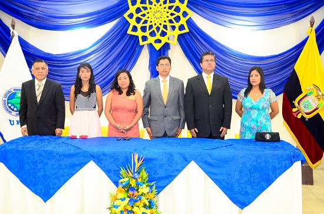
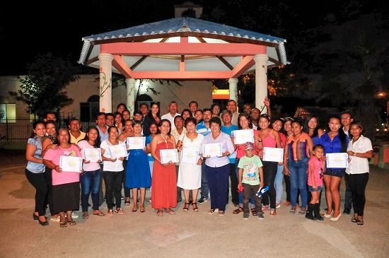

La comunidad de la facultad de Sistemas y Telecomunicaciones festejaron su VI Aniversario

En días pasados la Facultad de Sistemas y Telecomunicaciones de la UPSE, celebró su Sexto Aniversario de Creación. Sus autoridades, docentes y estudiantes se congratularon en cumplir otro año más labor, sirviendo a la colectividad de nuestra provincia.
Concluyó Proyecto de Vinculación en la comuna Ayangue

El 4 de marzo del 2016, en la comuna Ayangue del cantón Santa Elena, se realizó el acto de clausura del proyecto de Vinculación con la Colectividad, desarrollado por docentes y estudiantes de la carrera de Administración de Empresas de la UPSE, producto de un convenio suscrito entre la UPSE y la Comuna Ayangue.
Puedes seguirnos en la siguiente direccion de twitter: @UPSE_ec